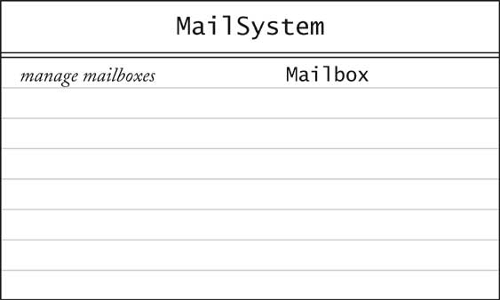
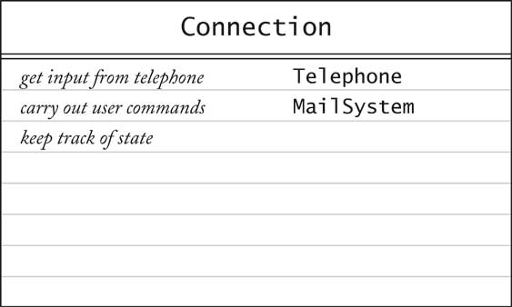

Object-Oriented Design & Patterns
Cay S. Horstmann
Chapitre 2
Le processus de conception orientée objet

Matière du chapitre
- Du problème jusqu'au code
- Les concepts de classe et d'objet
- Proposer des classes
- Proposer des responsabilités
- Relations entre classes
- Cas d'utilisation
- Fiches CRC
- Diagrammes de classes UML
- Diagrammes de séquence
- Diagrammes d'état
- Utiliser javadoc pour la documentation de conception
- Cas d'étude: Un système de messagerie vocale
Du problème jusqu'au code
Trois phases:
- Analyse
- Conception
- Implémentation
Cas d'étude: Un système de messagerie vocale
Phase analyse
Spécification fonctionnelle
- Définit complètement les tâches à réaliser
- Libre de contradictions internes
- Lisible par les experts du domaine et par les développeurs logiciels
- Peut être examinée attentivement par toutes les parties prenantes
- Peut être comparée à la réalité
Phase conception
Buts
- Proposer des classes
- Proposer le comportement des classes
- Proposer les relations entre classes
Artefacts
- Description textuelle des classes et des méthodes importantes
- Diagrammes des relations de classes
- Diagrammes des scénarios d'usage importants
- Diagrammes d'état pour les objets ayant des états notables
Phase implémentation
- Implémenter et tester les classes
- Combiner des classes pour former un programme
- Éviter l'intégration "big bang"
- Des prototypes peuvent être très utiles
Concepts de classe et d'objet
- Objet: trois concepts caractéristiques
- État
- Comportement
- Identité
- Classe: une collection d'objets similaires
Proposer des classes
Méthode empirique: chercher les noms dans la description du problème
- Mailbox
- Message
- User
- Passcode
- Extension
- Menu
Proposer des classes
Se focaliser sur les concepts et non l'implémentation
- MessageQueue stocke des messages
- Ne pas se soucier de comment la queue sera implémentée
Catégories de classes
- Choses tangibles
- Agents
- Évènements et transactions
- Usagers et rôles
- Systèmes
- Interfaces de système et des dispositifs
- Classes de fondation
Proposer des responsabilités
Méthode empirique: Chercher les verbes dans la description du
problème
Comportement de la MessageQueue:
- Ajouter message à la fin
- Supprimer message du début
- Déterminer si la queue est vide
Responsabilités
- Principe OO: Toute opération est la responsabilité d'une classe unique
- Exemple: Ajouter un message à la boîte vocale
- Qui en est responsable : Message ou Mailbox?
Relations entre classes
- Dépendance ("utilise")
- Agrégation ("a, possède")
- Héritage ("est")
Relation de dépendance
- C dépend de D: une méthode de C
manipule des objets de D
- Exemple: Mailbox dépend de Message
- Si C n'utilise pas D, alors C
peut être développé sans connaître D
Couplage
Agrégation
- Objet d'une classe contient des objets d'une autre classe
- Exemple: MessageQueue agrège Messages
- Exemple: Mailbox agrège MessageQueue
- Implémenté dans les variables d'instances
Multiplicités
Héritage
- Classe plus générale = super-classe
- Classe plus spécialisée = sous-classe
- Sous-classe supporte toutes les définitions de méthodes de la super-classe
(mais leur implémentation peuvent être différentes)
- Sous-classe peut avoir des méthodes rajoutées, des états
rajoutés
- Sous-classe hérite de la super-classe
- Exemple: ForwardedMessage hérite de Message
- Exemple: Greeting n'hérite pas de Message
(ne peut stocker un message d'accueil dans une boîte vocale)
Cas d'utilisation
- Analyse technique
- Chaque cas d'utilisation se focalise sur un scénario spécifique
- Cas d'utilisation = séquence d'actions
- Action = interaction entre acteur et un système informatique
- Chaque action produit un résultat
- Chaque résultat a une valeur pour l'un des acteurs
- Utilise des variations pour les situations exceptionnelles
Exemple de cas d'utilisation
Laisser un message
- L'appelant compose le numéro principal du système de messagerie
vocale
- Le système dit le message de guidage
Enter mailbox number followed by #
- L'usager tape le numéro d'extension
- Le système dit
You have reached mailbox xxxx. Please leave a message now
- L'appelant dit son message
- L'appelant raccroche
- Le système met le message dans la boîte vocale
Exemple de cas d'utilisation -- Variations
Variation numéro 1
1.1. À l'étape 3, l'usager rentre un numéro d'extension invalide
1.2. Le système de messagerie vocale dit
You have typed an invalid mailbox number.
1.3. Continuer avec l'étape 2
Variation numéro 2
2.1. Après l'étape 4, l'appelant raccroche au lieu de dire un message
2.3. Le système de messagerie vocale jette le message vide
Fiches CRC
- CRC = Classes, Responsabilités, Collaborateurs
- Développé par Beck et Cunningham
- Utilise une fiche pour chaque classe
- Nom de la classe en haut de la fiche
- Responsabilités à gauche
- Collaborateurs à droite
Fiches CRC
Fiches CRC
- Responsibilitié devrait être de haut niveau
- 1 - 3 responsabilités par fiche
- Collaborateurs sont pour la classe, non pas pour chaque responsabilité
Révisions structurées (Walkthroughs)
- Cas d'utilisation: "Laisser un message"
- Appelant se connecte au système de messagerie vocale
- Appelant compose le numéro d'extension
- "Quelqu'un" doit repérer la boîte vocale
- Ni Mailbox ni Message ne peuvent le faire
- Nouvelle classe: MailSystem
- Responsibilité: gère les boîtes vocales
Révisions structurées (Walkthroughs)

Diagrammes UML
- UML = Unified Modeling Language
- Unifie les notations développées par les "3 Amigos" Booch,
Rumbaugh,
Jacobson
- Plusieurs types de diagrammes
- Nous utiliserons trois types:
- Diagrammes de classes
- Diagrammes de séquence
- Diagrammes d'états
Diagrammes de classes
- Rectangle avec nom de classe
- Zones optionnelles
- Inclure seuls les attributs et méthodes importants
Diagrammes de classes

Relations entre classes

Multiplicités
- tout numéro (0 ou plus): *
- un ou plusieurs: 1..*
- zéro ou un: 0..1
- exactement un: 1

Composition
- Forme spéciale d'agrégation
- Objets agrégés n'éxiste pas en dehors du conteneur
- Exemple: des queues de messages sont contenues de manière permanente dans
une boîte vocale

Association
- Certains concepteurs n'aiment pas l'agrégation
- Association et une relation plus générale
- Association peut avoir des rôles

Association
- Certaines associations sont bidirectionnelles
Peut naviguer d'une classe à l'autre
- Exemple: Course possède un ensemble de Students, Student a un ensemble
de Courses
- Certaines associations sont dirigées
Navigation est unidirectionnelle
- Exemple: Message ignore la message queue le contenant

Types interface
- Type interface décrit un ensemble de méthodes
- Aucune implémentation, aucun état
- Classe implémente l'interface si elle implémente ses méthodes
- En UML, utiliser le stéréotype «interface»

Conseils
- Utilise UML pour informer, non pour impressionner
- Ne pas dessiner un seul diagramme monstrueux
- Chaque diagramme doit avoir un but spécifique
- Omettre les détails insignifiants
Diagrammes de séquence
- Chaque diagramme montre la dynamique d'un scénario
- Diagramme d'objet : nom de classe souligné

Auto-appel

Construction d'objet

Diagramme d'état
- Utiliser pour les classes possédant des états intéressants

Documentation de conception
Cas d'étude: Système de messagerie vocale
- Utiliser du texte pour la voix, des touches, raccrochage
- 1 2 ... 0 numéros sur une ligne seule indique des touches
- H sur une ligne seule signifie raccrochage ("hang
up")
- Toute autre entrée signifie la voix
- Dans le programme avec l'interface utilisateur, utilise des boutons pour
les touches (voir le chapitre 4)
Cas d'utilisation: Atteindre une extension
- Utilisateur compose le numéro principal du système
- Système dit le message de guidage
Enter mailbox number followed by #
- Utilisateur compose le numéro de l'extension
- Système dit
You have reached mailbox xxxx. Please leave a message now
Cas d'utilisation: Laisser un message
- Appelant effectue Atteindre une extension
- Appelant dit message
- Appelant raccroche
- Système place le message dans la boîte vocale
Cas d'utilisation: S'authentifier
- Propriétaire de la boîte vocale effectue Atteindre
une extension
- Propriétaire de la boîte vocale tape son mot de passe suivi
par #
(mot de passe par défaut = numéro de boîte vocale .
Pour changer, voir Changer mot de passe)
- Système dit le menu pour la boîte vocale:
Enter 1 to retrieve your messages.
Enter 2 to change your passcode.
Enter 3 to change your greeting.
Cas d'utilisation: Récupérer messages
- Propriétaire de la boîte vocale effectue S'authentifier
- Propriétaire de la boîte vocale choisit l'article "retrieve
messages"
- Système dit le menu pour les messages:
Press 1 to listen to the current message
Press 2 to delete the current message
Press 3 to save the current message
Press 4 to return to the mailbox menu
- Propriétaire de la boîte vocale choisit "listen to current message"
- Système dit nouveau message courant, ou, si plus aucun nouveau message,
ancien message courant.
Note: Message est présenté, non pas supprimé de la queue
- Système dit le menu message
- Utilisateur choisit "delete current message". Message est effacé.
- Continue à l'étape 3.
Cas d'utilisation: Récupérer messages
Variation numéro 1
1.1. Commencer à l'étape 6
1.2. Utilisateur choisit "save current message".
Message est enlevé de la queue nouvelle
et ajouté à la fin de la queue ancienne
1.3. Continuer à l'étape 3.
Cas d'utilisation: Changer message d'accueil
- Propriétaire de la boîte vocale effectue S'authentifier
- Propriétaire de la boîte vocale choisit "change greeting" menu option
- Propriétaire de la boîte vocale dit le nouveau message d'accueil
- Propriétaire de la boîte vocale appuie sur la touche #
- Système réalise le nouveau message d'accueil
Cas d'utilisation: Changer message d'accueil
Variation numéro 1: Raccrochage avant confirmation
1.1. Commencer à l'étape 3.
1.2. Propriétaire de la boîte vocale raccroche.
1.3. Système garde ancien message d'accueil.
Cas d'utilisation: Changer mot de passe
- Propriétaire de la boîte vocale effectue S'authentifier
- Propriétaire de la boîte vocale choisit l'article "change
passcode" du menu
- Propriétaire de la boîte vocale compose le nouveau mot de
passe
- Propriétaire de la boîte vocale appuie sur la touche #
- Système réalise le nouveau mot de passe
Cas d'utilisation: Changer mot de passe
Variation numéro 1: Raccrochage avant confirmation
1.1. Commencer à l'étape 3.
1.2. Propriétaire de la boîte vocale raccroche.
1.3. Système garde ancien mot de passe.
Fiches CRC pour le système de messagerie vocale
Quelques cas évidents
- Mailbox
- Message
- MailSystem
Fiches CRC initiales: Mailbox

Fiches CRC initiales: MessageQueue
Fiches CRC initiales : MailSystem

Telephone
- Qui interagit avec l'utilisateur?
- Telephone accepte les touches, les entrées vocales
- Telephone fournit à l'utilisateur les sorties
Telephone

Connection
- Avec qui Telephone communique-t-il ?
- Avec MailSystem?
- S'il y avait plusieurs téléphones?
- Chaque connexion peut être dans un état différent
(composition, enregistrement, récupération de messages,...)
- Est-ce que MailSystem devrait connaître l'état de toutes les connexions?
- Il vaut mieux donner cette responsabilité à une nouvelle classe
Connection

Analyse de cas d'utilisation: Laisser un message
- Utilisateur compose le numéro de l'extension. Telephone envoie
ce numéro à Connection
(Ajouter collaborateur Telephone à Connection)
- Connection demande à MailSystem de trouver la Mailbox
correspondante
- Connection demande à Mailbox le message d'accueil
(Ajouter responsabilité "manage greeting" à Mailbox,
ajouter collaborateur Mailbox à Connection)
- Connection demande à Telephone de donner le message
d'accueil par le haut-parleur
- Utilisateur dit le message. Telephone demande à Connection
de l'enregistrer.
(Ajoute responsabilité"record voice input" à Connection)
- Utilisateur raccroche. Telephone notifie Connection.
- Connection construit Message
(Ajouter fiche pour la classe Message,
ajouter collaborateur Message à Connection)
- Connection ajoute Message à Mailbox
Resultat de l'analyse
Resultat de l'analyse

Resultat de l'analyse

Resultat de l'analyse

Analyse du cas d'utilisation: Récupérer messages
- Utilisateur tape le mot de passe. Telephone notifie Connection
- Connection demande à Mailbox de vérifier le mot
de passe.
(Ajouter responsabilité "manage passcode" à Mailbox)
- Connection réalise la boîte vocale actuelle et demande à Telephone
de passer le menu message par le haut-parleur
- Utilisateur choisit "retrieve messages". Telephone transfère la
touche à Connection
- Connection demande à Telephone de passer le menu
message par le haut-parleur
- Utilisateur choisit "listen to current message". Telephone
transfère la touche à Connection
- Connection récupère le premier message de la boîte vocale courante.
(Ajouter responsabilité "retrieve messages" à Mailbox).
Connection demande à Telephone de passer le message
par le haut-parleur
- Connection demande à Telephone de passer le menu
de message par le haut-parleur
- Utilisateur choisit "save current message". Telephone transfère
la touche à Connection
- Connection dit à Mailbox de sauvegarder le message
(Changer les responsabilités de Mailbox à "retrieve, save,
delete
messages")
- Connection demande à Telephone de passer le menu
de message par le haut-parleur
Resultat de l'analyse

Résumé Fiche CRC
- Une fiche par classe
- Responsabilités de haut niveau
- Faire des révisions structurées pour élaborer les fiches
- D'habitude, la première conception n'est pas parfaite.
(Vous venez de voir la troisième itération de la conception faite par l'auteur
pour le système de messagerie vocale)
Diagramme de classe UML pour le système
- Collaborateurs CRC donnent des dépendances
- Mailbox dépend de MessageQueue
- Message ne dépend pas de Mailbox
- Connection dépend de Telephone, MailSystem,
Message, Mailbox
- Telephone dépend de Connection
Relations de dépendance

Relations d'agrégation
- Un système de messagerie a des boîtes vocales
- Une boîte vocale a deux queues de messages distinctes
- Une queue de message a un certain nombre de messages
- Une connexion a une boîte vocale courante
- Une connexion a des références à un MailSystem et un Telephone
Diagramme de classe UML pour le système

Diagramme de séquence pour le cas d'utilisation : Laisser un message

Interpréter un diagramme de séquence
- Chaque appui sur une touche effectue un appel individuel de dial,
mais un seul appel est montré
- Connection veut faire en sorte que le message d'accueil (greeting) passe
au haut-parleur
- Chaque boîte vocale connaît son message d'accueil
- Connection doit trouver l'objet Mailbox:
Appeler findMailbox sur l'objet MailSystem
- Paramètres ne sont pas affichés (p.ex. numéro de boîte vocale)
- Valeurs de retour ne sont pas affichées (p.ex. boîte vocale trouvée)
- Noter que Connection conserve la boîte vocale pour plusieurs appels
Diagramme de séquence : Récupérer messages

Diagramme d'état pour Connection

Implémentation en Java